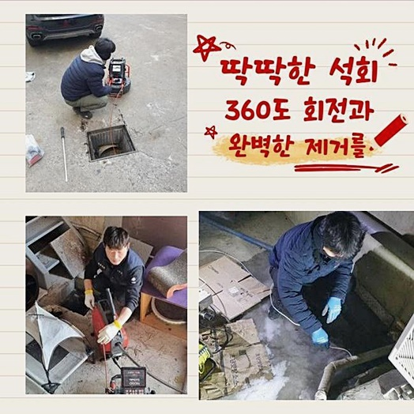
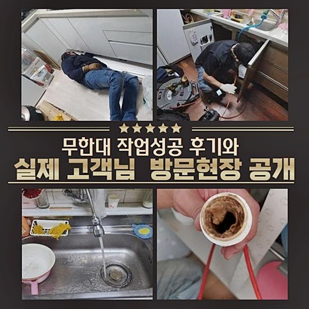
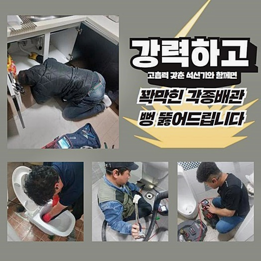
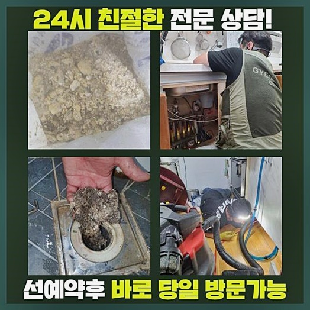
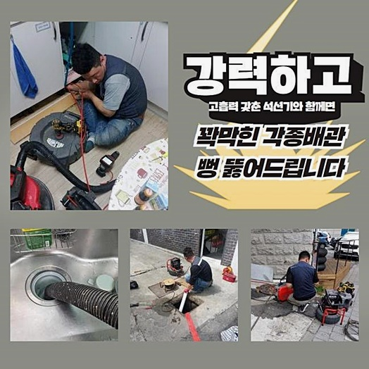
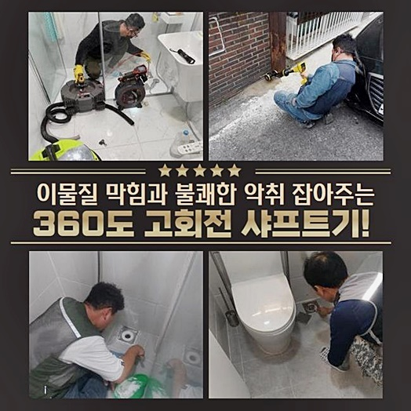
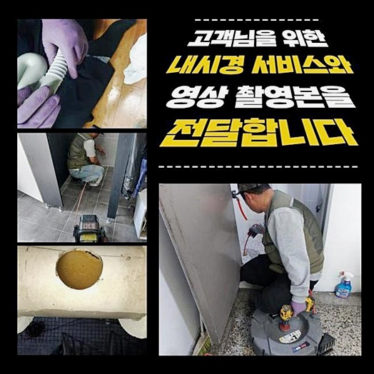

🏠 서탄면화장실뚫음 용이동 횡주관청소 누수탐지
용인 하수구막힘 전문 시공 후기

📋 작업 개요
- 위치: 용인
- 서비스 유형: 하수구막힘, 배관막힘, 맨홀막힘, 누수수리, 역류해결, 뚫는업체, 배관청소, 고압세척, 설비공사, 악취차단
- 작업 일시: 2024. 6. 6. 10:35
- 업체명: 하수구수사대 (010-5615-2118)
🔍 문제 상황
서탄면화장실뚫음 용이동 횡주관청소 누수탐지
갑작스럽게 배수관에서 정체가 생겼던 일이 있었을 것이라고 생각하고 있습니다
집 내부에 있는 하수관이 물이 유출되는 상황이 되어 파이프 통수진행을 진행해 보셨던 경우도 직접적 혹은 우회적으로 있을 것이라 생각하고 있는데요
하수관 내측으로 쓰레기들이 들어가면 초기 1~2년 정도는 문제가 발생하지 않을 수 있겠지만 지속적으로 들어가면 물이 안내려가게 됩니다
욕실사용이 안된다면 삶의 질 하락 속도가 부풀어질 수밖에 없답니다
차단이 생겨난 파이프를 고쳐내려고 나뭇가지 등도 삽입해보고 슬러지 전용 약품까지 반영하였는데도 변화가 없었다면 파이프 뚫음 전문가에게 신속하게 문의하여 수리받으실 것을 권해드립니다
어설픈 대응은 외려 막힘을 안 좋게 만들 수 있다는 사실을 지나치시면 안돼요
본 글에서는 배관 세척업무와 연계된 상식과 더불어 막힘이 생긴 형편에서 신속히 처리하는 방책을 선보여 드리겠습니다
금번 소개해드릴 장소와 유사한 역류때문에 고생하고 있으시다면 심층적인 대처가 요청되죠
안내드릴 처소는 공장 사장님의 촉박한 전화연락을 받은 후 재빠르게 출장하였던 곳이랍니다
업체의 주차장쪽에 설비돼 있는 배관이 막히는 바람에 업무에 어려움이 있었답니다
현장에 가보니 배관로가 깊이 자리잡고 있었으며 정체가 일어난 처소 또한 동떨어져 있었어요 작업이 쉬이 이루어지지 않을 거라는 걸 관측할 수 되었어요
워낙 시급한 문제여서 배수관의 일부분을 굴착하기로 했어요

🔎 원인 분석
💡 전문가 진단: 정밀 진단 장비를 사용하여 슬러지의 고착 여부를 판명하고 타격/세척 작업을 실시했습니다.
물의 이동이 이루어지지 않았으므로 내부를 볼 수 없는 상황이었답니다
그래서 면밀한 상태 확인이 불가하므로 배관 촬영기기를 통해서 관찰하기로 마음먹었어요
안에 이물들이 매우 많았어요 가까이서 보았더니 산업용 기름찌꺼기였답니다
건물관리자께서 세척 용액을 활용해봤지만 해결되는 모습은 목도할 수 없었다고 하십니다 배수가 전혀 진행될 수 없을 정도로 기름덩이가 전체를 둘러싸고 있는 형국이었답니다
내시경cctv를 통하여 좀더 면밀하게 들여다보니 맨홀부근에서 시관로에까지 연결된 부분에 문제가 생겨 액체가 넘쳐나고 있던 거였죠
예상한 것보다 넓은 부위에서 고착화된 슬러지들로 들어차 있었습니다
제품을 생산하는 곳이다보니 기름때로 인한 잔재들이 지속 누적될 수밖에 없었어요
문의자분에게 중반부의 하수관을 관통하는 것이 알맞겠다고 안내하고 차후 진행방안을 알려드린 다음 업무에 들어갔답니다
업무 진행에 관한 승인을 받은 다음 공장내부의 파이프에서부터 외부 관로까지 세척을 시행하였답니다
오염수준이 방대하여 선제적인 작업을 마친 후엔 인접한 배수시설 또한 적절한 공구류들을 써서 처치해야 하죠
이땐 플렉스샤프트기기를 가동하여야 되는데요 이것은 끝단에 붙은 사슬이 돌면서 내측에 고착화된 잔재들을 부수는 기능을 행하고 있답니다
간간이 의뢰자께서 고RPM으로 가동되면서 배관 내측에 트러블이 나타나지는 않을지에 대해 우려하시는 경우도 있긴 한데요
사용법을 숙지하지 못한 담당자가 대책없이 작동시키는 경우에 그러한 상황이 생겨날 수 있겠으나 우리와 같이 숙련성이 입증된 인원들에겐 합치되지 않는 다는 걸 설명드립니다
내시경cctv를 통해 안을 검진하면서 막힘이 가중된 부분과 이유를 분석하고 시공절차에 들어가게 됩니다

🔧 작업 과정
생산시설에서 방출된 오수에 함유된 찌꺼기들이 잔뜩 메우고 있었습니다
분쇄기기를 작동하여 이물질을 해체하는 것을 관찰하시고는 이제 해결의 기미가 보인다고 표현하셨어요
긴 구간이었으나 타공부분을 기점으로 해서 빈틈없이 청소를 이어나갔답니다
제조시설이 있는 처소에선 기름때가 자주 유출되며 간헐적으로 기름 배출이 될 수 있기 때문에 엄격한 시스템으로 운영된다고 해도 역류 및 악취 발생이 생기는 거예요
말끔한 모습으로 현장이 바뀌자 앞으론 더더욱 주의를 기울여야 하겠다면서 부르길 잘 했다고 하셨어요
생산공장 전체적으로 배수가 안되는 모습이 된 건 야외에 매립되어 있는 배관쪽에서 막힘이 발발하였기 때문이예요
이러한 문제가 생겨나 버린다면 직원에게도 불편함을 줍니다 여러 노폐물들이 맨눈으로 나타날 정도로 상당하게 누적되어 있었는데요
6개월 이상 세정과 관련한 업무를 하지 않았다 말하시더라고요
이로인해 배수구를 통해 여러 물질들이 흘러들어왔다는 사항을 파악하게 되었어요
건축시설이 오래되어서 하수구역시 낙후되었을 여지가 있는데요
설비가 노화되는 현상 역시 배수관의 차단이 생겨났을 때에 위험요소라고 볼 수 있어요
찌꺼기들이 고착화되면 물흐름을 막기 때문에 배수관 벽면에 압력을 가할 수 있고 부식이 생겼었던 부분은 쉽게 깨질 수 있답니다
배수관 내부에 있던 노폐물 덩어리들은 샤프트기기를 이용해서 넉넉히 처치 가능했으므로 추가적인 세정작업은 불필요했답니다
체인노커의 연속적인 회전을 바탕으로 슬러지들을 전반적으로 제거해 나가는 시공을 실행했죠
일상적으로 배관클리닝이 안 되었다면 갑자기 막히는 일이 일어날 수 있으며 물이 역행할 수도 있답니다
빠르게 고인물이 빠져나가지 못하고 평시와 다른 부분이 목격된다면 늦지 않게 저희와 같은 베테랑에게 도움을 요청하시는 것이 좋답니다
한번 정체가 생겼던 데는 점차적으로 사태의 수준이 심중해질 가망이 높죠
빠른 해결에 초점을 맞추는 것도 중요하겠으나 숙련된 담당자를 수문하는 일도 불가결합니다
충분한 기술력을 갖추었는지 알아보시는 것이 좋습니다
전문적인 실력과 설비 해당 부분이 갖추어졌다면 복잡한 고장이 일어났더라도 처리가 가능합니다
저희팀은 통수작업이 알맞게 실시되도록 고가의 기기들을 갖추고 있습니다
뚫음시공에 마땅한 도구들을 활용하도록 플렉스샤프트와 고압청소 장비 일체를 맞춘 다음에 공사현장으로 이동하고 있어요


✅ 작업 완료
슬러지들을 떠미는 방안으로 시작하고 내시경촬영기기를 투입시켜 안쪽에 고형물들이 체류하고 있는지도 관찰하며 빈틈없이 청소합니다
이런 방식으로 뚫음을 받아보신다면 쉬이 슬러지가 누적되지 않아서 재막힘에 대한 부분은 거의 없다고 생각하셔도 무방합니다
보는 바와 같이 이물들이 말끔하게 사라졌어요
꼭 막힘이 발생하지 않았다 해도 주기적으로 예방하는 업무를 하는 공장들도 많죠
요청한 시간에 맞게 방문하고 있으며 이른 아침에도 근무하고 있으니 주저하지 마시고 문의해 주세요
방관시하지 마시고 변화가 목격되면 바로바로 해결해 나가실 것을 권해드리는 바입니다




⚠️ 베란다 누수 및 방수 관리 방법
- ✅ 비가 많이 올 때 창틀 주변이나 아래층 천장에 얼룩이 생기는지 정기적으로 확인해 보세요.
- ✅ 우수관 주변 실리콘 마감이 들뜨거나 깨진 틈새가 있는지 손상 여부를 수시로 체크하세요.
- ✅ 베란다 바닥 타일의 줄눈(메지)이 소실되면 그 틈으로 물이 침투하여 누수가 유발됩니다.
- ✅ 누수 의심 증상 발견 시 방치하면 아래층 손실이 커지므로 즉시 전문가의 진단을 받으십시오.
💡 핵심 정리
- 확실한 장비 작업(내시경 점검 및 샤프트 스케일링)으로 원인을 뿌리 뽑습니다.
- 작업 후 1년 이내에 동일한 부위 재발 시 100% 무상 A/S 서비스를 보장합니다.
- 서울 · 경기 · 인천 전 지역에 24시간 언제든 긴급 출동할 수 있도록 항시 대기 중입니다.
❓ 자주 묻는 질문 (FAQ)
🚨 용인 하수구막힘 문제로 고민이신가요?
정확한 원인 진단과 확실한 시공으로 재발 없는 해결을 약속드립니다.
24시간 긴급 출동 | 서울 · 경기 · 인천 전지역 | 1년 내 재발 시 무상 A/S